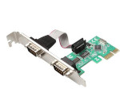
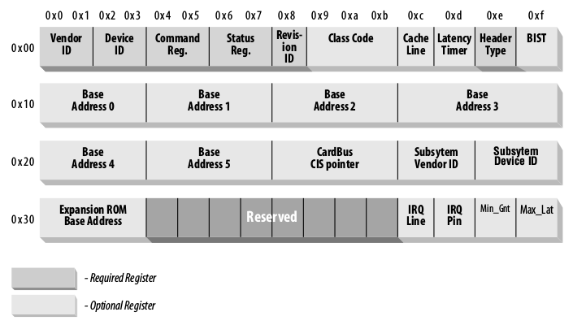
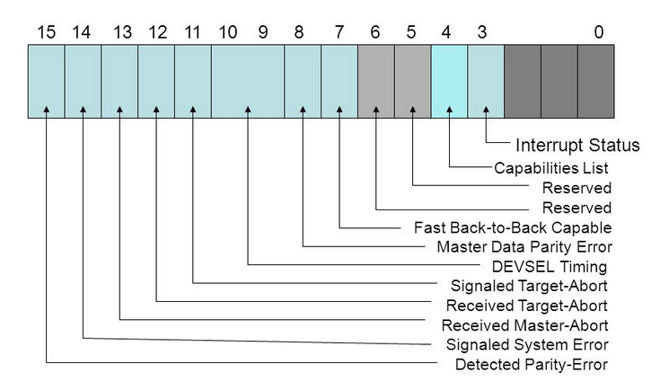

In this article, I want to discuss some basics of the Linux PCI/PCIe drivers development. I think this issue is not properly covered, and some existing information is might be outdated.
I will show basic concepts and important structures, and this is might be a good beginner guide for newbie driver developers.
The PCI bus is the most popular way to connect high-speed peripheral inside a modern computer system. It’s a video and network adapters, sound cards, storage devices, etc. Some custom and special devices, some acquisition boards with ADC, or any other interface might be custom and special devices. Even your modern laptop uses this bus to connect internal devices to the CPU, even without actual physical connectors.
This bus is widely available on a different platforms, like x86 and ARM. These days, it’s quite common to use a PCI bus to connect a high-performance wireless chip to the SoC inside WiFi routers.
{kind=link}
PCI and PCI Express
The original PCI bus was parallel with a lot of contacts and is currently obsolete. I will not focus on the obsolete PCI bus.
Modern and faster PCIe bus uses single or multiple (1-16) pairs of differential wires (lanes, one pair for TX, and one for RX). You can tell the number of differential lines by the bus name, x1, x4, and x16. More lanes give a bigger throughput. Another difference between the PCI Express bus and the older PCI is the bus topology; PCI uses a shared parallel bus architecture. PCI Express is based on point-to-point topology, with separate serial links connecting every device to the root complex controller that can be integrated into the CPU. The PCI host and all devices share a common set of address, data, and control lines. You can read an excellent architecture explanation in this Wikipedia article.
From the typical driver’s point of view, there is no difference between PCI and PCI Express. All differences are handled by the hardware and lower bus drivers of the Linux kernel. For the driver developer, API is the same.
Linux PCI subsystem
The operating system PCI subsystem reflects the actual hardware configuration and interconnections. There might be multiple PCI buses and multiple devices on those buses. Every bus and device is assigned a unique number, which allows identifying each module. Also, a PCI device might have different “functions” or “endpoints.” All those endpoints are also numbered. The full system path to the device might look like this: <bus id>:<device id>:<function id>
Additionally, every PCI device contains factory-programmed Vendor and Device IDs. These IDs are also unique and assigned by the PCI regulatory consortium.
The Linux kernel can properly identify a device and load the proper driver using these IDs. Of course, every driver should have ID verification routines.
The primary userspace utility is lspci This command can show a lot of useful information. Run this command with “-nn” argument to get all devices with IDs.
{kind=link}
You can see many internal PCIe devices here, bridges, USB controllers, Audio and Network controllers, etc. All this information can be obtained manually from the sysfs:
ls -la /sys/bus/pci/devices
lrwxrwxrwx 1 root root 0 Dec 21 14:05 0000:00:00.0 -> ../../../devices/pci0000:00/0000:00:00.0
lrwxrwxrwx 1 root root 0 Dec 21 14:05 0000:00:00.2 -> ../../../devices/pci0000:00/0000:00:00.2
lrwxrwxrwx 1 root root 0 Dec 21 14:05 0000:00:01.0 -> ../../../devices/pci0000:00/0000:00:01.0
lrwxrwxrwx 1 root root 0 Dec 21 14:05 0000:00:01.2 -> ../../../devices/pci0000:00/0000:00:01.2…
The human-readable strings are not taken from the hardware. This is a local database of the lspci: /usr/share/hwdata/pci.id
You can always find the latest PCI ID database here: https://pci-ids.ucw.cz/
Or you can check the Vendor ID here: https://pcisig.com/membership/member-companies
The Linux kernel assigns special memory regions, “Base Address Registers” (BARs), to communicate with the hardware. These memory addresses (and region length) are written to the PCI controller hardware during the system boot.
You can find something like this In dmesg:
[ 0.959296] pci_bus 0001:00: root bus resource [bus 00-ff]
[ 0.964853] pci_bus 0001:00: root bus resource [io 0x10000-0x1ffff] (bus address [0x0000-0xffff])
[ 0.973943] pci_bus 0001:00: root bus resource [mem 0x4840000000-0x487fffffff] (bus address [0x40000000-0x7fffffff])
[ 0.999755] pci 0001:00:00.0: BAR 14: assigned [mem 0x4840000000-0x48402fffff]
[ 1.007107] pci 0001:00:00.0: BAR 6: assigned [mem 0x4840300000-0x48403007ff pref]
[ 1.014769] pci 0001:01:00.0: BAR 0: assigned [mem 0x4840000000-0x48401fffff 64bit]
[ 1.022579] pci 0001:01:00.0: BAR 6: assigned [mem 0x4840200000-0x484020ffff pref]
[ 1.030265] pci 0001:00:00.0: PCI bridge to [bus 01-ff]
[ 1.035563] pci 0001:00:00.0: bridge window [mem 0x4840000000-0x48402fffff]
There is no way to determine installed PCI hardware. So the bus must be enumerated. Bus enumeration is performed by attempting to read the vendor ID and device ID (VID/DID) register for each combination of the bus number and device number at the device’s function #0.
The kernel can call the corresponding driver during the enumeration stage with a compatible VID/PID pair. Some devices (like PCI bridges) might be statically described in the device tree in an embedded system. The static hardware configuration is supported with “platform drivers”.
Every PCI compliant device should implement a basic set of register – configuration registers.
The Linux kernel attempts to read these registers to identify and properly configure the device. All these registers are mapped to the memory and available for the driver developer for reading and writing.
The first 64 bytes of the registers are mandatory and should be implemented (by the hardware vendor) in any case.
The optional registers may contain zero values if there is nothing to provide from the hardware.
{kind=link}
Please note that byte order is always little-endian. This might be important if you are working on some big-endian system.
Let’s dig into some registers deeply.
Vendor ID and Device ID are already well known and should contain valid identifiers of the hardware vendor.
Command registers define some capabilities. The operating system initializes these bits.
{kind=link}
Status register holds different events of the PCI bus and is filled by the hardware.
Class code defines a class of the device (Network adapter, for example). The full list of the class codes can be found here: https://wiki.osdev.org/PCI#Class_Codes
{kind=link}
Base Address Registers – “BAR” registers filled by the Linux kernel and used for the IO operations.
Subsystem Vendor ID and Subsystem Device ID – helps to differentiate specific board/device model. This is is optional, of course.
The Linux kernel PCI implementation can be found in the kernel source tree drivers/pci directory.
For driver developers kernel provides a header file include/linux/pci.h. Here you can find all the required structures and functions.
The main PCI driver structure is struct pci_dev. This is quite a big structure representing an actual device and can be used for the register’s access and IO operations. Typically you don’t need to remember all fields of the structure, only basic concepts.
PCI driver entry point is struct pci_driver. The driver developer should initialize this structure (set callbacks) and pass it to the kernel.
struct pci_driver {
struct list_head node;
const char *name;
const struct pci_device_id *id_table; /* Must be non-NULL for probe to be called */
int (*probe)(struct pci_dev *dev, const struct pci_device_id *id); /* New device inserted */
void (*remove)(struct pci_dev *dev); /* Device removed (NULL if not a hot-plug capable driver) */
int (*suspend)(struct pci_dev *dev, pm_message_t state); /* Device suspended */
int (*resume)(struct pci_dev *dev); /* Device woken up */
void (*shutdown)(struct pci_dev *dev);
int (*sriov_configure)(struct pci_dev *dev, int num_vfs); /* On PF */
const struct pci_error_handlers *err_handler;
const struct attribute_group **groups;
struct device_driver driver;
struct pci_dynids dynids;
};
The structure field “id_table” should be initialized with the IDs array. Those IDs define compatible Vendor and Product IDs for devices. You can set here multiple pairs of VID/PID if your driver supports multiple devices. For example, declare support of VID = 0F1F + PID = 0F0E, and VID = 0F2F + PID = 0F0D:
static struct pci_device_id my_driver_id_table[] = {
{ PCI_DEVICE(0x0F1F, 0x0F0E) },
{ PCI_DEVICE(0x0F2F, 0x0F0D) },
{0,}
};
It’s important to end this array with a single zero value.
Most drivers should export this table using MODULE_DEVICE_TABLE(pci, ...).
This macro is doing a few important things.
If your driver is built-in and compiled with the kernel, then the driver information (device IDs table) will be statically integrated into the global devices table. This allows the kernel to run your driver automatically when compatible hardware is found.
If your driver is built as a separate module, then the device table can be extracted with depmod utility. This information is added to a cache and automatically loads your driver kernel object when compatible hardware is found.
Other important fields of the struct pci_driver are:
.name – unique driver name, this string will be displayed in /sys/bus/pci/drivers
.probe – A callback function called by the kernel after the driver registration.
.remove – A callback function called by the kernel during the driver unloading.
.suspend – A callback function called by kernel when the system is going to suspend mode.
.resume – A callback function called when the system resumes after the suspend mode.
Configured pci_driver should be registered and unregistered during the driver module loading and unloading. This allows the kernel to run your driver.
pci_register_driver(struct pci_driver *); pci_unregister_driver(struct pci_driver *);
Device access
To access PCI configuration registers kernel provides a set of functions:
int pci_read_config_byte(const struct pci_dev *dev, int where, u8 *val); int pci_read_config_word(const struct pci_dev *dev, int where, u16 *val); int pci_read_config_dword(const struct pci_dev *dev, int where, u32 *val); int pci_write_config_byte(const struct pci_dev *dev, int where, u8 val); int pci_write_config_word(const struct pci_dev *dev, int where, u16 val); int pci_write_config_dword(const struct pci_dev *dev, int where, u32 val);
You can read and write 8, 16, and 32-bit data.
The argument “where” specifies the actual register offset. All accessible values are defined in linux/pci_regs.h
For example, read PCI device Vendor ID and Product ID:
#include <linux/pci.h> u16 vendor, device, revision; pci_read_config_word(dev, PCI_VENDOR_ID, &vendor); pci_read_config_word(dev, PCI_DEVICE_ID, &device);
Read the “Interrupt state” of the Status register:
#include <linux/pci.h>
u16 status_reg;
pci_read_config_word(dev, PCI_STATUS, &status_reg);
/* Check the bit 3 */
if ((status_reg >> 3) & 0x1) {
printk("Interrupt bit is set\n");
} else {
printk("Interrupt bit is not set\n");
}
Sure, the kernel has many other functions, but we will not discuss them there.
Actual device control and data communication is made through the mapped memory (BARs). It’s a little bit tricky.
Of course, it’s just a memory region(s). What to read and write is depends on the actual hardware. It’s required to get actual offsets, data types, and “magic” numbers somewhere. Typically this is done through the reverse engineering of the Windows driver. But this is outside the scope of this article.
Sometimes hardware vendors are kind enough to share their protocols and specifications.
To access the device memory, we need to request the memory region, start and stop offsets and map this memory region to some local pointer.
#include <linux/pci.h> int bar; unsigned long mmio_start, mmio_len; u8 __iomem *hwmem; /* Memory pointer for the I/O operations */ struct pci_dev *pdev; /* Initialized pci_dev */ ... /* Request the I/O resource */ bar = pci_select_bars(pdev, IORESOURCE_MEM); /* "enable" device memory */ pci_enable_device_mem(pdev); /* Request the memory region */ pci_request_region(pdev, bar, "My PCI driver"); /* Get the start and stop memory positions */ mmio_start = pci_resource_start(pdev, 0); mmio_len = pci_resource_len(pdev, 0); /* map provided resource to the local memory pointer */ hwmem = ioremap(mmio_start, mmio_len);
Now it’s possible to use hwmem to read and write from/to the device. The only correct way is to use special kernel routines. The data can be read and written in the 8, 16, and 32-bit chunks.
void iowrite8(u8 b, void __iomem *addr); void iowrite16(u16 b, void __iomem *addr); void iowrite32(u16 b, void __iomem *addr); unsigned int ioread8(void __iomem *addr); unsigned int ioread16(void __iomem *addr); unsigned int ioread32(void __iomem *addr);
You might note that there is an alternatively IO API that can be found in some drivers.
#include <linux/io.h> unsigned readb(address); unsigned readw(address); unsigned readl(address); void writeb(unsigned value, address); void writew(unsigned value, address); void writel(unsigned value, address);
On x86 and ARM platforms, ioreadX/iowriteX functions are just inline wrappers around these readX/writeX functions. But for better portability and compatibility, it’s highly recommended to use io* functions.
PCI DMA
The high-performance device supports Direct Memory Access. This is implemented with bus mastering. Buse mastering is the capability of devices on the PCI bus to take control of the bus and perform transfers to the mapped memory directly.
Bus mastering (if supported) can be enabled and disabled with the following functions:
void pci_set_master(struct pci_dev *dev); void pci_clear_master(struct pci_dev *dev);
PCI interrupts
Interrupt handling is critical in device drivers.
Hardware may generate an interrupt on data reception event, error, state changes, and so on. All interrupts should be handled most optimally.
There are two types of PCI interrupts:
- Pin-based (INTx) interrupts, an old and classic way
- MSI/MSI-X interrupts, modern and more optimal way, introduced in PCI 2.2
It’s highly recommended to use MSI interrupts when possible. There are a few reasons why using MSIs can be advantageous over traditional pin-based interrupts.
Pin-based PCI interrupts are often shared amongst several devices. To support this, the kernel must call each interrupt handler associated with an interrupt, which leads to reduced performance for the system. MSIs are never shared, so this problem cannot arise.
When a device writes data to memory, then raises a pin-based interrupt, the interrupt may arrive before all the data has arrived in memory (this becomes more likely with devices behind PCI-PCI bridges). The interrupt handler must read a register on the device that raised the interrupt to ensure that all the data has arrived in memory. PCI transaction ordering rules require that all the data arrive in memory before the value may be returned from the register. Using MSI’s avoids this problem as the interrupt-generating write cannot pass the data writes, so by the time the interrupt is raised, the driver knows that all the data has arrived in memory.
Please note that not all machines support MSIs correctly.
You can find information about currently allocated interrupts in /proc/interrupts
This information contains interrupt spreads over the CPU cores and interrupts types (MSI or pin-based).
Typically interrupts are dynamically set for the CPU cores. A special daemon tries to spread interrupts in the most optimal way on some systems.
Also, you can manually select the CPU core for the selected interrupt. This might be helpful in some fine-tuning situations.
The core assignment can be done via the SMP affinity mechanism.
Just select required cores (in a binary pattern) and send this value (as HEX number) to /proc/irq/X/smp_affinity, where X is the interrupt number.
For example, put IRQ 44 to the first and third cores (set bits 0 and 2, from left to right):
echo 5 > /proc/irq/44/smp_affinity
Now let’s see how to use both types of interrupts.
INTx interrupts
The classic pin-based interrupt can be requested with request_threaded_irq()and request_irq()
int request_threaded_irq( unsigned int irq,
irq_handler_t handler,
irq_handler_t thread_fn,
unsigned long irqflags,
const char * devname,
void * dev_id);
int request_irq( unsigned int irq,
irqreturn_t handler,
unsigned long irqflags,
const char *devname,
void *dev_id);
For the new drivers, it’s recommended to use request_threaded_irq()
The first parameter, irq specifies the interrupt number to allocate. For some devices, for example, legacy PC devices such as the system timer or keyboard, this value is typically hard-coded. It is probed or otherwise determined programmatically and dynamically for most other devices.
The second parameter, handlerIs the function to be called when the IRQ occurs.
thread_fn – Function called from the IRQ handler thread. If NULL – no IRQ thread is created.
irqflags – Interrupt type flags; Possible values can be found here.
dev_name – The string passed to request_irq is used in /proc/interrupts to show the owner of the interrupt.
dev_id – This pointer is used for shared interrupt lines. It is a unique identifier used when the interrupt line is freed, and the driver may also use that to point to its own private data area (to identify which device is interrupting).
In the end, all requested IRQs should be released with free_irq()
void free_irq ( unsigned int irq, void * dev_id);
A simple example, install and use interrupt #42:
static irqreturn_t sample_irq(int irq, void *dev_id)
{
printk("IRQ %d\n", irq);
return IRQ_HANDLED;
}
...
if (request_irq(42, test_irq, 0, "test_irq", 0) < 0) {
return -1;
}
MSI interrupts
In the case of MSI/MSIX interrupts, everything is almost the same, but it’s required to tell the PCI subsystem that we want to use MSI/MSIX interrupts.
Use the following function:
int pci_alloc_irq_vectors(struct pci_dev *dev, unsigned int min_vecs, unsigned int max_vecs, unsigned int flags);
This function allocates up to max_vecs interrupt vectors for a PCI device. It returns the number of vectors allocated or a negative error.
The flags argument is used to specify which type of interrupt can be used by the device and the driver (PCI_IRQ_LEGACY, PCI_IRQ_MSI, PCI_IRQ_MSIX). A convenient short-hand (PCI_IRQ_ALL_TYPES) is also available to ask for any possible kind of interrupt. If the PCI_IRQ_AFFINITY flag is set, pci_alloc_irq_vectors() will spread the interrupts around the available CPUs.
Of course, interrupt type (MSI/MSIX) and the number of MSI interrupts depend on your hardware.
Free the allocated resources with:
void pci_free_irq_vectors(struct pci_dev *dev);
PCI driver skeleton
I think it’s enough with boring theory.
This is an example of the PCI device driver. This driver can load and register for specified VID/PID pairs. Some basic operations (config registers read, memory read/write) are performed.
/* Sample Linux PCI device driver */
#include <linux/init.h>
#include <linux/module.h>
#include <linux/pci.h>
#define MY_DRIVER "my_pci_driver"
/* This sample driver supports device with VID = 0x010F, and PID = 0x0F0E*/
static struct pci_device_id my_driver_id_table[] = {
{ PCI_DEVICE(0x010F, 0x0F0E) },
{0,}
};
MODULE_DEVICE_TABLE(pci, my_driver_id_table);
static int my_driver_probe(struct pci_dev *pdev, const struct pci_device_id *ent);
static void my_driver_remove(struct pci_dev *pdev);
/* Driver registration structure */
static struct pci_driver my_driver = {
.name = MY_DRIVER,
.id_table = my_driver_id_table,
.probe = my_driver_probe,
.remove = my_driver_remove
};
/* This is a "private" data structure */
/* You can store there any data that should be passed between driver's functions */
struct my_driver_priv {
u8 __iomem *hwmem;
};
/* */
static int __init mypci_driver_init(void)
{
/* Register new PCI driver */
return pci_register_driver(&my_driver);
}
static void __exit mypci_driver_exit(void)
{
/* Unregister */
pci_unregister_driver(&my_driver);
}
void release_device(struct pci_dev *pdev)
{
/* Disable IRQ #42*/
free_irq(42, pdev);
/* Free memory region */
pci_release_region(pdev, pci_select_bars(pdev, IORESOURCE_MEM));
/* And disable device */
pci_disable_device(pdev);
}
/* */
static irqreturn_t irq_handler(int irq, void *cookie)
{
(void) cookie;
printk("Handle IRQ #%d\n", irq);
return IRQ_HANDLED;
}
/* Reqest interrupt and setup handler */
int set_interrupts(struct pci_dev *pdev)
{
/* We want MSI interrupt, 3 lines (just an example) */
int ret = pci_alloc_irq_vectors(pdev, 3, 3, PCI_IRQ_MSI);
if (ret < 0) {
return ret;
}
/* Request IRQ #42 */
return request_threaded_irq(42, irq_handler, NULL, 0, "TEST IRQ", pdev);
}
/* Write some data to the device */
void write_sample_data(struct pci_dev *pdev)
{
int data_to_write = 0xDEADBEEF; /* Just a random trash */
struct my_driver_priv *drv_priv = (struct my_driver_priv *) pci_get_drvdata(pdev);
if (!drv_priv) {
return;
}
/* Write 32-bit data to the device memory */
iowrite32(data_to_write, drv_priv->hwmem);
}
/* This function is called by the kernel */
static int my_driver_probe(struct pci_dev *pdev, const struct pci_device_id *ent)
{
int bar, err;
u16 vendor, device;
unsigned long mmio_start,mmio_len;
struct my_driver_priv *drv_priv;
/* Let's read data from the PCI device configuration registers */
pci_read_config_word(pdev, PCI_VENDOR_ID, &vendor);
pci_read_config_word(pdev, PCI_DEVICE_ID, &device);
printk(KERN_INFO "Device vid: 0x%X pid: 0x%X\n", vendor, device);
/* Request IO BAR */
bar = pci_select_bars(pdev, IORESOURCE_MEM);
/* Enable device memory */
err = pci_enable_device_mem(pdev);
if (err) {
return err;
}
/* Request memory region for the BAR */
err = pci_request_region(pdev, bar, MY_DRIVER);
if (err) {
pci_disable_device(pdev);
return err;
}
/* Get start and stop memory offsets */
mmio_start = pci_resource_start(pdev, 0);
mmio_len = pci_resource_len(pdev, 0);
/* Allocate memory for the driver private data */
drv_priv = kzalloc(sizeof(struct my_driver_priv), GFP_KERNEL);
if (!drv_priv) {
release_device(pdev);
return -ENOMEM;
}
/* Remap BAR to the local pointer */
drv_priv->hwmem = ioremap(mmio_start, mmio_len);
if (!drv_priv->hwmem) {
release_device(pdev);
return -EIO;
}
/* Set driver private data */
/* Now we can access mapped "hwmem" from the any driver's function */
pci_set_drvdata(pdev, drv_priv);
write_sample_data(pdev);
return set_interrupts(pdev);
}
/* Clean up */
static void my_driver_remove(struct pci_dev *pdev)
{
struct my_driver_priv *drv_priv = pci_get_drvdata(pdev);
if (drv_priv) {
if (drv_priv->hwmem) {
iounmap(drv_priv->hwmem);
}
pci_free_irq_vectors(pdev);
kfree(drv_priv);
}
release_device(pdev);
}
MODULE_LICENSE("GPL");
MODULE_AUTHOR("Oleg Kutkov <contact@olegkutkov.me>");
MODULE_DESCRIPTION("Test PCI driver");
MODULE_VERSION("0.1");
module_init(mypci_driver_init);
module_exit(mypci_driver_exit);
And Makefile:
BINARY := test_pci_module
KERNEL := /lib/modules/$(shell uname -r)/build
ARCH := x86
C_FLAGS := -Wall
KMOD_DIR := $(shell pwd)
OBJECTS := test_pci.o
ccflags-y += $(C_FLAGS)
obj-m += $(BINARY).o
$(BINARY)-y := $(OBJECTS)
$(BINARY).ko:
make -C $(KERNEL) M=$(KMOD_DIR) modules
clean:
rm -f $(BINARY).ko
Real-life example
I worked in the Crimean Astrophysical observatory a few years ago and found a PCI interface board for 4 incremental linear or angular encoders. I decided to use this board, but there was no Linux driver.
I contacted the vendor and proposed to them to write an open-source driver for Linux. They were kind enough and proposed the full documentation.
This was a table with memory offsets and data sizes. Basically, at which offsets I can read sensor data and so on.
I wrote this driver. The driver uses a character device interface to interact with the user.
It’s quite simple and might be a good example to start PCI driver development.
Thanks for reading
Hello mR Oleg Kutkov,
Can you state the sources you used for the study?
Thanks
Sure. It’s Linux device drivers 3rd edition book,
Linux kernel PCI documentation: https://www.kernel.org/doc/html/latest/PCI/pci.html
And existing PCI device drivers, just as an example.
Hi,
Thanks for the reply .
How can I call the lirdev_read function at the user level in lir941_linux_driver?
This function is called on character device read.
For example
cat /dev/mydriverwill open your character device and call ‘read’ function. In the case of my driver,lirdev_readis called.Hi,
I want to get the best performance of pcie device.
Can you guide me?
Thanks
Super helpful THANKS!!!!
When I used this as a template I found that the MSI free routine at unload would seg fault.
I debugged this down to two things… you should use pci_irq_vector() to get the actual assigned IRQ vector to assign to the handler.
retval = pci_alloc_irq_vectors(dev, 1, 1, PCI_IRQ_MSI);
irq = pci_irq_vector(dev, 0);
retval = request_irq(irq, irq_fnc, 0, “name”, dev);
and number two you need to free the IRQ before deallocating from the PCI layer.
release_device()
…
irq = pci_irq_vector(dev,0);
free_irq(irq, pdev);
pci_free_irq_vectors(pdev);
Again thanks for documenting this SUPER helpful.
You’re welcome 🙂
Your blog is a great resource.
I’m porting a pcie device driver and it used to call of_node_full_name() in the probe function. I need to read the device tree but every attempt to read has failed.
Something like this:
static int probe(struct pci_dev *pdev, const struct pci_device_id *id)
{
pr_info(“Found PCI device: %s\n”, of_node_full_name(pdev->dev.of_node));
}
Could you include some example how to?
Thank you.
Hi,
I’ve gone through it and I’m planning to learn PCIe Card Reader. There I’ve understood that /drivers/misc/cardreader/rtsx_pci.ko (while rtsx_pci.ko = rtsx_pcr.o rts5209.o rts5229.o rtl8411.o rts5227.o rts5249.o rts5260.o rts5261.o rts5228.o) is the PCIe Card Reader Hardware that is available in Laptop and /drivers/mmc/host/rtsx_pci_sdmmc.ko is the MMC card interface via PCIe Card Reader.
In that rtsx_pci.ko has used module_pci_driver, while rtsx_pci_sdmmc.ko uses module_platform_driver. Why is that so? What does it mean by Platform device driver? Why haven’t they used pci_register_driver directly?
Kindly to clarify the doubt sir. I was unable to find answers anywhere.
Hi Oleg,
Thank you for an excellent resource, it has been very helpful to me and encouraged me to experiment.
One thing I found, in the character driver the last parameter for unregister_chrdev_region(MKDEV(dev_major, 0), MINORMASK) should perhaps be MAXDEV?
Best regards
Paul
Can you please give some insight for pcie hot plug details and it’s working.